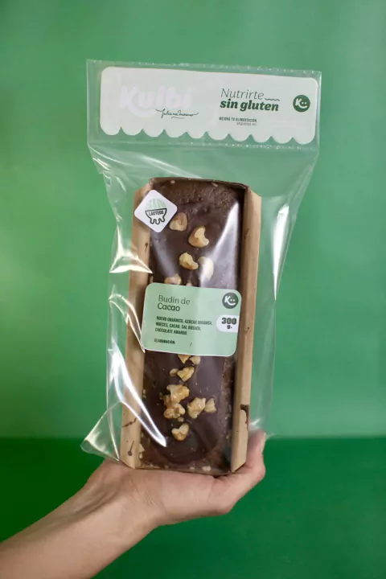

Nuestros Productos
Pan de Molde

Ingredientes: Harina de arroz, Harina de sarraceno,
Fecula de maiz, Fecula de mandioca, Levadura y Sal
Fecula de maiz, Fecula de mandioca, Levadura y Sal
Budin de cacao

Ingredientes: Harina de arroz, Harina de sarraceno,
Fecula de maiz, Fecula de mandioca,
Polvo de hornear, Azucar,
Manteca, Huevos, Nueces y Cacao en polvo
Pan de Sandwich

Ingredientes: Harina de arroz, Harina de sarraceno, Fecula de maiz,
Fecula de mandioca, Levadura y Sal
Fecula de mandioca, Levadura y Sal
Tarta de Calabaza

Ingredientes: Harina de arroz, Harina de sarraceno,
Fecula de maiz, Fecula de mandioca, goma xantica,
Calabaza, Zanahoria y Sal
Fecula de maiz, Fecula de mandioca, goma xantica,
Calabaza, Zanahoria y Sal
Tarta de Queso Azul

Ingredientes: Harina de arroz, Harina de sarraceno,
Fecula de maiz, Fecula de mandioca, goma xantica,
queso azul, nueces y Sal
Fecula de maiz, Fecula de mandioca, goma xantica,
queso azul, nueces y Sal
Tarta de Espinaca
Ingredientes: Harina de arroz, Harina de sarraceno, Fecula de maiz,
Fecula de mandioca, Levadura y Sal
Fecula de mandioca, Levadura y Sal